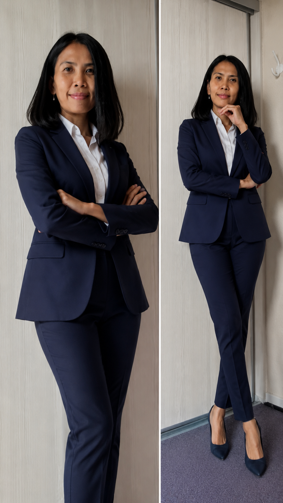

About Me
Hospitality Professional, Frontend Developer & Digital Creator
I’m Janeth Cadiente Sandberg, a hospitality professional and digital creator with a background in International Hospitality Management, Marketing Management, customer experience, and frontend development.
My work brings together people, technology, communication, and creativity. I enjoy turning ideas into practical solutions and creating experiences that are thoughtful, functional, and meaningful.

My Story
A Journey Built Around People, Creativity & Technology
My professional foundation is in hospitality, where I learned the importance of understanding people, communicating clearly, working as part of a team, and creating positive experiences.
My studies in marketing expanded that perspective and gave me a stronger understanding of communication, branding, digital content, and how organizations connect with their audiences.
Alongside my professional development, I developed a strong interest in technology and creative digital work. This led me to frontend development, website creation, storytelling, digital content, and independent creative projects.
Today, I enjoy working at the intersection of these areas — combining practical professional experience with creativity, technology, and a genuine interest in people.
Professional Background
What Shaped My Professional Experience
Hospitality & Customer Experience
My hospitality background has developed my ability to work in dynamic environments, communicate with different people, and maintain a professional, service-oriented approach.
I bring an understanding of customer experience, teamwork, daily operations, problem solving, and attention to detail.
Marketing & Communication
My background in Marketing Management strengthened my understanding of communication, branding, digital marketing, content creation, and audience engagement.
I enjoy making information clear, engaging, and accessible.
Digital Creation & Frontend Development
My interest in technology led me to frontend development and digital creation.
I work with HTML, CSS, JavaScript, responsive web design, Firebase, and other digital tools to create interactive web experiences.
I particularly enjoy turning creative ideas into functional digital projects.
Education
Education & Professional Development
Professional Bachelor in International Hospitality Management
UCL Erhvervsakademi og Professionshøjskole
Studies focused on hospitality, leadership, project management, human resources, communication, and customer experience.
AP Degree in Marketing Management
IBA Erhvervsakademi Kolding
Studies focused on marketing, global marketing, digital marketing, communication, and business development.
EUX Kontoruddannelse – 1. del
Aalborg Handelsskole
Education covering office administration, business processes, bookkeeping, documentation, and administrative work.
What I Bring
Core Competencies
Customer & Operations
- Customer Service
- Customer Experience
- Operations Coordination
- Administrative Support
- Problem Solving
- Process Improvement
Communication & Collaboration
- Professional Communication
- Team Collaboration
- Cross-cultural Communication
- Planning & Organization
- Time Management
- Attention to Detail
Professional Approach
- Fast Learner
- Structured & Organized
- Curious & Adaptable
- Solution-oriented
- Continuous Learning
- Creative Thinking
Technology
Digital Skills & Tools
Web Development
- HTML
- CSS
- JavaScript
- Responsive Web Design
- Website Development
Digital Tools
- Firebase
- Canva
- Shopify
- AI Tools
Microsoft Office
- Microsoft Word
- Microsoft Excel
- Microsoft Outlook
I enjoy learning new technologies and adapting to new digital systems and tools.
Beyond Professional Skills
Creative Work
Outside my professional development, I also work on independent creative projects through my creative identity, DaintyJha.
My creative work includes music, storytelling, digital content, and interactive web experiences.
DigiCafe
A digital café concept bringing together music, stories, games, conversation, and creative digital experiences in one environment.
DaintyJha
My creative music identity, exploring emotions, storytelling, sound, and original musical projects.
DaintyStories
A creative space for stories, fictional worlds, characters, emotions, and imagination.
Building DigiCafe allows me to combine skills developed across hospitality, marketing, technology, design, and storytelling.
How I Work
People First. Ideas With Purpose.
I believe great work happens when people, creativity, and technology come together.
My hospitality background taught me to think about the person on the other side of an experience. My marketing education taught me how communication and presentation influence engagement.
My development work allows me to turn ideas into interactive digital solutions.
I approach new projects with curiosity, attention to detail, and a willingness to learn.
I believe in learning by doing — experimenting, solving problems, improving, and continuing to grow.
Professional Goals
Where I Want to Go Next
I am interested in opportunities where I can combine my strengths in customer experience, communication, administration, digital tools, and creative development.
I am motivated by environments where I can continue developing professionally, contribute to meaningful projects, learn from others, and bring a combination of practical experience and creative thinking to a team.
My Professional Experience
Want the Full Picture?
For a detailed overview of my professional experience, education, skills, and qualifications, take a look at my CV.
Let's Connect
Have a Project or Opportunity?
Thank you for taking the time to learn more about my professional background and the things I create.
If you are interested in working together, discussing a project, or simply connecting, I would be happy to hear from you.